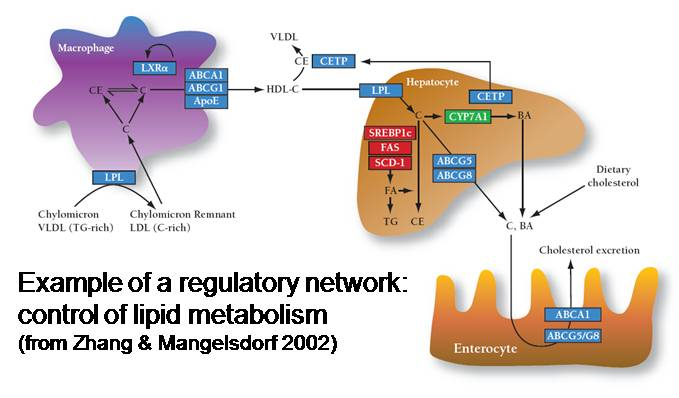

-
Michael Brudno
In Michael Brudno’s group, faculty and students are working on developing novel algorithms for analyzing biological data such as DNA and protein sequences, building software systems to simplify the bioinformatics software development and deployment cycle and working closely with biologists to address questions of biological interest. Current projects in the lab encompass DNA alignment and assembly, studying correlated mutations in proteins to identify contacting residues and sites of positive selection, identification of structural genomic variation between individuals, and developing clusters of virtual machines for bioinformatics applications.
Read More -
Ryan Lilien
Ryan Lilien’s group takes a many-sided approach to studying the established relationship between molecular structure and function. On one front, they are developing algorithms to expedite protein structure determination through the automated analysis of experimentally collected data. The group is also attacking the problem of protein design by modeling the functional effects of changes in structure – They are currently in collaborations to modify antibiotic synthesis pathways and to design novel fluorescent biosensors. The goal of the chemical synthesis planning project is the development of tools to assist chemists in devising a sequence of chemical reactions for the production of target biomolecules. By devising improved synthetic plans, Lilien’s group aims to reduce the cost of pharmaceutical development and production.
Read More -
Gary Bader
Gary Bader’s focus is on developing the ability to accurately predict biomolecular interaction networks directly from a genome sequence. This would significantly reduce the cost associated with cell biology research, enable us to better detect disease causing genetic mutations and allow the design of new biological systems for industrial or medical uses. The Bader group uses large-scale genomics and proteomics datasets to predict protein-protein interactions involved in important cell signaling systems. This is supported through the development of open-source biological pathway and network databases and visualization and analysis software, such as Cytoscape, cPath and Pathway Commons.
Read More -
Brendan Frey
Brendan Frey and his students develop machine learning techniques for detecting complex patterns and answering scientific questions in large-scale molecular biology data. Recent projects include the detection and classification of functional gene elements in human and mouse, modelling of tissue-dependent alternative splicing and its regulatory elements in human and mouse and analyzing gene-gene and drug-gene interactions in yeast. He collaborates with experimentalists Benjamin Blencowe, Charlie Boone, Andrew Emili, Timothy Hughes and others.
Read More -
Igor Jurisica
Igor Jurisica’s research involves predicting, analyzing, mining and visualizing large networks of protein-protein interactions. This work is essential to understanding basic biological processes and complex diseases such as cancer. Due to inherent complexity and volume of this data, scalable algorithms and heuristics are needed to enable interactive data integration and interpretation
Read More -
 Quaid Morris
Quaid MorrisThe Morris Lab, headed by Quaid Morris, uses machine learning and statistical modeling to perform research in molecular biology. They currently have two main areas of interest: the regulation of gene expression via cis-acting elements and microRNA targeting, and the prediction of gene function by integration of multiple sources of genomic and proteomic data. The group works in close collaboration with experimental biologists to test and refine our statistical models and in silico predictions.
Read More -
Alan Moses
Alan Moses’ research in computational biology aims to understand how genetic regulatory networks are encoded in genome sequences and how they change or stay the same over evolution. Regulatory networks determine which genes are active at what time or place, or in response to what signals. These networks underlie many fundamental biological processes in normal and disease states. Systematic understanding of the genetic information specifying regulatory networks (the ‘regulatory code’) is still far from complete, such that translating this code is one of the major challenges of the post-genomic era. Because of the large size of genome sequences and the digital nature of genetic information, computational and statistical methods are indispensible. In order to understand the grammar of the regulatory language and how evolution writes and rewrites these molecular instructions, we use techniques from many branches of statistics and computer science, including information theory, pattern recognition, machine learning and computational linguistics. Research projects in Alan Moses’ group lead to new methods to predict and identify regulatory sequences, as well as to a better understanding of the evolution of regulatory sequences and networks.
Read More